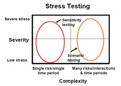
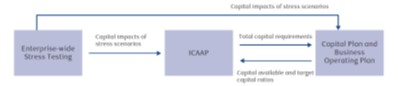
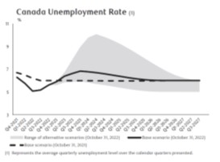
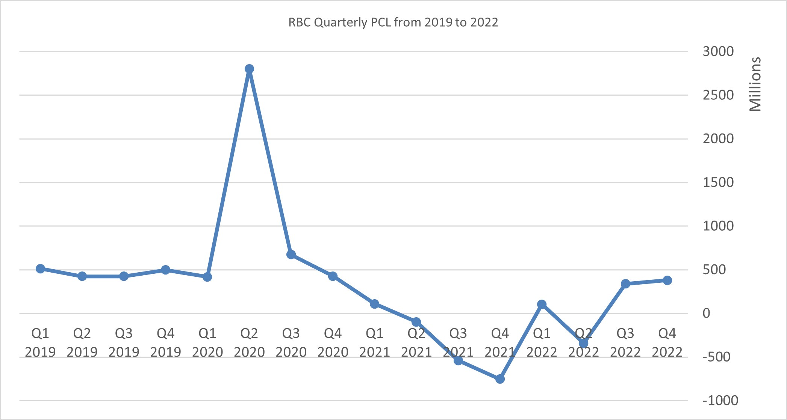

Stress Testing and Credit Provisioning for Canadian Banks
Credit risk management in the banking book
In Canada (and most of other countries), the largest risk exposure banks are subject to is credit risk, roughly accounting for 90% of total quantifiable risks as evidenced by banks capital disclosure (Table 1). The major contribution of credit risk is from the banking book, which are assets on the balance sheet that are expected to be held to maturity. In the banking book the wholesale portfolio is usually comprised of businesses, sovereigns, public sector entities, banks and other financial institutions, as well as certain high net value individuals. The retail portfolio is comprised of residential mortgages, personal loans, credit cards, and small business loans.
Credit risk is quantified at both the individual obligor and portfolio levels to manage expected credit losses and minimize unexpected losses to limit earning volatility and ensure that the bank is adequately capitalized. Unexpected loss for at pre-determined confidence internal is used to measure capital requirement. Expected loss for credit products are often referred to as allowance for credit loss (AOL) in accounting.
At the bank level, there are three pillars to manage credit risk, which are economic and regulatory capital, stress testing, and credit provisioning. In this paper, we will focus on the latter two, which have been playing a central role in managing the credit risk during the pandemic.
Table 1. Canadian Top 5 Bank Risk Weighted Asset by Risk Type
|
CAD$, Bn |
BNS |
CIBC |
BMO |
TD |
RBC |
|
Credit risk |
389,573 |
268,100 |
284,773 |
422,056 |
476,758 |
|
Market risk |
10,820 |
9,230 |
13,522 |
22,913 |
35,342 |
|
Operational risk |
50,194 |
33,328 |
42,353 |
63,795 |
77,639 |
|
Other |
11,861 |
4,976 |
23,349 |
8,284 |
20,140 |
|
Total Bank Risk Weight Asset |
462,448 |
315,634 |
363,997 |
517,048 |
609,879 |
The Stress Testing Framework
The concept of stress testing was introduced by the Basel Committee on Banking Supervision (BCBS) in Pillar 2 of Basel II capital framework in 2005. According to BCBS, “a stress test is commonly described as the evaluation of the financial position of a bank under a severe but plausible scenario to assist in decision making within the bank” [1,2].
In Canada, the Office of the Superintendent of Financial Institutions Canada (OSFI) E-18 (Stress Testing) required stress testing exercises as an integrated component of the sound business and financial practices [3]. OSFI E-19 (Internal Capital Adequacy Assessment Process (ICAAP) for Deposit-Taking Institutions) emphasized that the rigorous and forward-looking stress testing should be incorporated in the capital planning process to identify possible adverse events or changes in market conditions [4]. Macro Stress Test (MST) is an OSFI prescribed stress scenario on forward looking macro-economic conditions, and banks are required to report a set of risk measures under this scenario including those mentioned previously such as PCL level for credit risk, CET1 ratio for regulatory capital and liquidity coverage and net stable funding ratio for liquidity risk.
Stress testing includes both scenario testing and sensitivity testing, as shown in Figure 1. Hypothetical stress scenario of macro-economic and financial variables such as GDP, CPI, unemployment rate, house price index, commodity price, stock market volatility, securities yield spread and interest rate, etc., are designed. The stress testing scenarios evaluates global recessions, equity market corrections, elevated debt levels, trade policies, changes in interest rates, real estate price corrections, and shocks to credit spreads and commodity markets, among other factors. The latest developments in macro-economic environment, such as pandemic, geo-political tension, inflation risk, supply chain pressures as well as physical and transitional climate risk are also incorporated in the stress testing.
Given credit rating (could be internally assessed), banks use the scenario to update their models for Probability of Default (PD) estimate, which regresses on those scenarios. Loss Given Default (LGD) are typically impacted by the value of the collateral under the scenario. Exposure at Default (EAD) estimates will consider the increased drawn down on approved limit during the stressed period.
The process of stress scenarios used for capital planning at RBC is shown in Figure 2. The stress scenarios are evaluated across the organization, and results are integrated to develop an enterprise-wide view of financial impacts and capital requirements, which in turn facilitate the planning of mitigating actions to absorb adverse events.
|
Figure 1  Source: OSFI E-18 |
|
Figure 2  Source: RBC 2022 annual report |
The Credit Provisioning Framework
Under the IFRS 9 accounting standard which was effective on November 1, 2017 for Canadian banks, allowance for credit losses (ACL) represents expected credit losses (ECLs) on financial assets in the banking book [5,6]. The allowance is increased by the provision for credit losses (PCL), decreased by write-offs net of recoveries and disposals, and impacted by foreign exchange. (PCL) is the amount charged to income necessary to bring the allowance for credit losses to a level determined appropriate by management. This includes provisions on performing and impaired financial assets.
ACL is computed according to a three-stage expected credit loss impairment model:
Performing financial assets
• Stage 1 – From initial recognition of a financial asset to the date on which the asset has experienced a significant increase in credit risk relative to its initial recognition, a loss allowance is recognized equal to the credit losses expected to result from defaults occurring over the 12 months following the reporting date.
• Stage 2 – Following a significant increase in credit risk relative to the initial recognition of the financial asset, a loss allowance is recognized equal to the credit losses expected over the remaining lifetime of the asset.
Impaired financial assets
• Stage 3 – When a financial asset is considered to be credit-impaired, a loss allowance is recognized equal to credit losses expected over the remaining lifetime of the asset. Interest income is calculated based on the carrying amount of the asset, net of the loss allowance, rather than on its gross carrying amount.
The PD, LGD and EAD inputs used to estimate Stage 1 and Stage 2 credit loss allowances are modelled based on the macroeconomic and financial variables. Several (usually 3 or 5) distinct scenarios are designed to capture a wide range of possible outcomes (base, downside, and upside) and are then weighted according to the relative likelihood of the scenarios. Similar to stress testing, the scenarios are based on forward looking macroeconomic and financial variables.
The Canada unemployment rate projection by RBC is shown in Figure 3. In the base forecast, Canada unemployment rate is expected to rise to 5.6% in Q4, 2022, peaking by Q4 2023 at 6.8%, and reverting to the long run equilibrium towards the latter end of the forecast horizon.
|
Figure 3  Source: RBC 2022 annual report |
Challenges of Stress Testing and Credit Provisioning during the pandemic
Both stress testing and ECL models rely on macroeconomic and financial variables as inputs, with the parameters calibrated to historical data up to 20 years. When in Q1 2020 the Covid-19 pandemic shut down businesses and erased millions of jobs almost overnight and then followed by massive fiscal stimulus from governments, the projected GDP could be down up to 30% and unemployment rate could be up to 50%, which has never been happened before. Based on these scenarios and calibrated parameters via historical data, all obligors would essentially default, leading to huge losses. The stimulus and other stability measures in response to challenges posed by Covid-19 break the boundaries of any model that was built based on pre-pandemic data.
Nevertheless, the banks had to change the model and post a significant increase in PCLs. In Q2 2020, RBC recorded a PCL of 2.8Bn (vs. 400MM in Q1), TD 3.2Bn (vs. 900MM in Q1), Scotia Bank 1.8Bn (vs. 936MM), CIBC 1.4Bn (vs. 261MM in Q1), BMO 1.1Bn (vs. 176MM in Q1).
It turns out that the banks have overestimated PCL. The new credit models failed to take into account government support measures and overpredicted losses for companies that were financially strong, even in troubled sectors, because of sector/rating based projected PD and LGD.
The PCL were revised down over the course of 2021, as some major economies bounced back. However, it is debatable, because the same stress model would predict a too low PD, with pandemic scenarios were taken into account. Entering 2021, the stress testing and ECL model have new challenges of high inflation and high interest rates, which are all outside of the historical data calibration window. RBC’s quarterly PCL from 2019 to 2020 is shown in Figure 4, reflecting the challenges of both changing macroeconomic environments and credit model performance.
In Q4, 2022, PCL has increased substantially again, as banks factored in more pessimistic macroeconomic outlooks, featured by a possible recession, high interest rate, and high inflation. Aggregated PCL for six major banks increased to 2.3Bn during Q4, 2022 from 1.5Bn in Q3 [7].
|
Figure 4  Source: RBC quarterly reports |
References:
1. https://www.bis.org/publ/bcbs155.pdf
2. https://www.bis.org/bcbs/publ/d450.pdf
3. https://www.osfi-bsif.gc.ca/Eng/fi-if/rg-ro/gdn-ort/gl-ld/Pages/e18.aspx
4. https://www.osfi-bsif.gc.ca/eng/docs/e19.pdf
5. https://www.ifrs.org/issued-standards/list-of-standards/ifrs-9-financial-instruments/